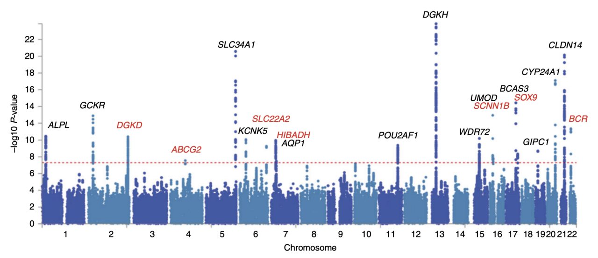

pvalues <- readRDS("pvalues.rds")
library(ggplot2)
ggplot(mapping = aes(x = pvalues)) +
geom_histogram(binwidth = 0.025, boundary = 0) +
xlim(0, 1)
Multiple testing problem: If I test \(n\) true null hypotheses at level \(\alpha\), then on average I will still (falsely) reject \(\alpha\)n of them.
Examples:
Test the safety of a drug in terms of dozen different side effects
Test whether there is a link between acne and jelly beans
Test whether a disease is related to 10,000 different genes

Consider the number of errors that can occur when testing \(m\) multiple hypotheses:
| Truth / Decision | Reject \(H_0\) | Fail to reject \(H_0\) | Total |
|---|---|---|---|
| \(H_0\) is true | \(V\) False positives | \(U\) (No error) | \(m_{0}\) |
| \(H_0\) is false (\(H_1\) true) | \(S\) (correct) | \(T\) False negative | \(m_{1}\) |
| Total | \(R\) | \(m-R\) | \(m\) |
What are some other ways we can think of controlling type I and II errors?
The family wise error rate (FWER) is the probability that that we make at least one false positive i.e \[\begin{align} \text{P}(V>0)& =1-\text{P(no rejection of any of } m_{0} \text{ nulls})\\ &=1-(1-\alpha)^{m_{0}}\rightarrow 1 \text{ as } m_{0}\rightarrow \infty \end{align}\]
Bonferroni method is a method for controlling FWER by adjusting the value of \(\alpha\) for a given \(m_{0}\). However we usually do not know \(m_{0}\). Instead we can use \(m\) and set \[\alpha^{*}=\alpha/m\]
For eample, if we typically use the significance level \(\alpha=0.05\) when carrying out a single test, then to carry out 13 separate test we should use significance level \(\alpha^{*}=0.05/12=0.00417\) instead.
Bonferroni controls FWER at level \(\alpha\) if \(P(V>0)\leq \alpha\).
\[\begin{align} P(V>0) & =P[(\text{reject } H^{(1)}_{0}) \cup (\text{reject } H^{(2)}_{0})\cup\ldots\cup (\text{reject } H^{(m_{0})}_{0})]\\ & \leq P[(\text{reject }H^{(1)}_{0})]+\dots+P[(\text{reject }H^{(m_{0})}_{0})]\\ &=\frac{\alpha}{m}+\ldots+\frac{\alpha}{m}=\frac{\alpha m_{0}}{m}\leq \alpha \end{align} \]
Often FWER control is too stringent (conservative). We will now see that there are more nuanced methods of controlling our type I error.
False discovery rate control helps filter out results that look significant but are likely false positives.
To use this approach, carry out all of the multiple tests at significance \(\alpha\). Collect all significant tests (i.e all such that \(p-value\leq \alpha\)). We call this subset of tests the discoveries.
The FDR estimates the proportion of discoveries that are false positives.
\[\mathrm{FDR} = \mathbb{E}\left[\frac{V}{\max(R,1)}\right]\]
where
- \(R\) = number of rejected null hypotheses (“discoveries”),
- \(V\) = number of those rejections that are actually wrong (false discoveries / false positives).
FDR is the expected proportion of false positives among all findings you call significant.
So, controlling FDR at (say) 5% means: on average, no more than about 5% of your reported discoveries are false positives.
The Benjamini-Hochberg algorithm is a method for controlling the FDR. The procedure has these steps:
First order the p-values in increasing order
Then for some choice of \(q\) target FDR, find the largest value of \(k\) that satisfies:
\[ p_{(k)} \leq q k/m \]
Finally reject the hypotheses \(1,...,k\)
For example: The following dataset contains many p-values for testing differences in gene expression in human airway smooth muscle cell lines with and without treatment with dexamethasone, a synthetic glucocorticoid.
Let’s check the histogram of the p-values. Notice it is a mixture of two components:
null: the p-values resulting from the test for which the null hypothesis is true.
alt: the p-values resulting from the tests for which the null hypotheis is not true.
The relative size of these two components depends on the fraction of true nulls and true alternatives.
pvalues <- readRDS("pvalues.rds")
library(ggplot2)
ggplot(mapping = aes(x = pvalues)) +
geom_histogram(binwidth = 0.025, boundary = 0) +
xlim(0, 1)
We can now apply the BH procedure. There are \(>30000\) p-values, we will visualize the smallest 7000 and choose a FDR of \(q=0.10\)
library("dplyr")
q = 0.10
awde <- tibble(pvalue = pvalues) %>%
mutate(rank = rank(pvalue, ties.method = "first"))
m <- length(pvalues)
ggplot(filter(awde, rank <= 7000), aes(x = rank, y = pvalue)) +
geom_line() +
geom_abline(slope = q / m, intercept = 0, col = "red")
We will then find the rightmost point where teh black (our p-values) and red lines (slope \(q/m\)) instersect. Then it rejects all tests to the left.
kmax = with(arrange(awde, rank),
last(which(pvalue <= q * rank / m)))
kmax[1] 4099BH uses the fact that under the null, p-values behave like $Uniform(0,1)$
Under the null, small p-values are rare If a hypothesis is truly null \(P(p\leq t)=t\). So among \(m_{0}\) true nulls, the expected number of \(p\)-values below a cutoff t is about \(m_{0}t\).
If you reject everything with \(p\leq t\), the “false discoveries” scale like \(m_{0}t\). Let \(R\) be the total number of rejections. Roughly:
expected false rejections \(\approx m_{0}t\)
total rejections = \(R\)
So the false discovery proportion is roughly
\[ \frac{m_{0}t}{R} \]
To keep this around \(q\), you would like \(t\approx \frac{qR}{m_{0}}\)
BH replaces the unknown \(m_{0}\) with a safe upper bound \(m\) and so
\[ t \approx \frac{qR}{m} \]
The step-up rule finds a self-consistent cutoff
How it differs from \(\alpha\):
- \(\alpha\) controls the chance of a false positive for a single test (or the per-test error rate).
- FDR controls the mix of errors among the set of all rejected hypotheses, which is typically more relevant in large-scale testing (genomics, A/B tests at scale, multiple endpoints, etc.).